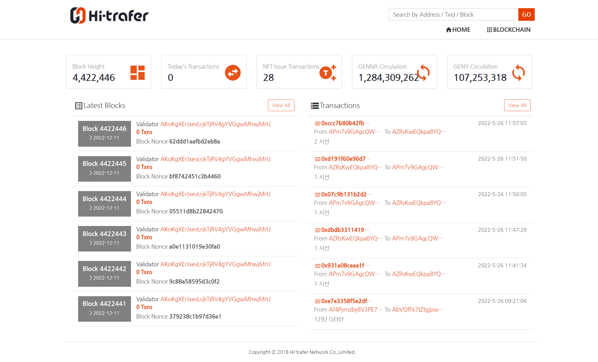

Main

Projects:
- - 사내 Blockchain 시스템(18년 11월)
- - 개발 인원 : 1명
회사 메인 서비스중 하나로, 코인(다프코인) Transcation및 Amount를 확인하는 사이트 입니다.
페이지 수가 거의 없어 혼자 개발하기에 충분했습니다.
Transcation을 실시간으로 처리 했어야 했는데, WEB Socket과 script에 폴링을 이용하여 구현했습니다. WEB Socket은 당시 사내에서 처음으로 사용하는
기술이였는데, 발표자료를 만들어 도입한 과정을 설명했던게 기억이 남는 프로젝트입니다.
프로젝트는 Click WEB site 에서 확인할 수 있습니다.
Technologies:
- - JAVA
- - Spring Framework
- - Spring WEB Socket
- - JSP
- - MariaDB
- - MyBatis
- - AWS (EC2 & S3)
- - OS(CentOS7)